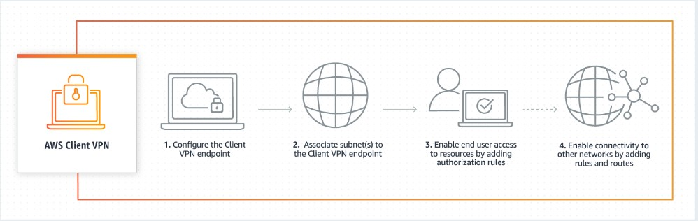
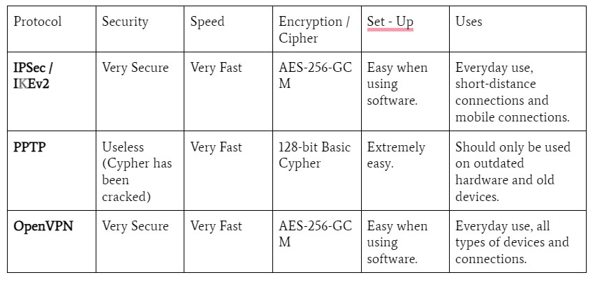
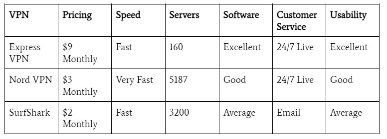

Introduction to VPNs
In 2013 Edward Snowden revealed to the world the ways that governments and big organizations collect data and monitor you remotely, insighting tons of ordinary people to consider their own internet security. By now I am sure you have heard the term VPN floating around somewhere in your life, whether from movies, your work, your friends or pop culture, VPN’s have become increasingly popular over the last decade.If you haven’t, fear not, as this guide explains the rudimentary, fundamental and essential aspects of VPNs, both in the theory behind them and their practical uses/setting.
So, What is a VPN?
VPN stands for Virtual Private Network. They are used to protect your privacy and connection to others on the internet. In general, it works by creating an encrypted (a fancy way of saying hard to read) tunnel for your data, protecting your online identity by hiding your IP-Address from snooping eyes, and allowing you to connect to networks you don’t know a lot about with peace of mind.A VPN is sort of like a protective passageway for your online data to pass through, keeping it safe from third-parties like Governments, Hackers, Employers, Companies, Websites, you name it!
There are two main VPN types:
Client Based VPN
A Client Based VPN is a connection that is set up between a single user (you!) and a virtual private network (the network provided by the VPN service), and is the one that is generally recommended for individuals looking to protect their personal data. A client based VPN will generally be a piece of software that is downloaded onto your personal device, it will do most of the work for you, you simply need to log in and connect to a network of your choosing! Once you log in, the software (or client) will create an encrypted tunnel between your personal device and the client’s remote network. The clients can communicate with each other using a unique IP address that has been assigned to them from the software.
Here’s a picture:

Site to Site:
A site to site VPN is a connection that is set up between multiple networks, and is generally found in corporate or branch networks. Think of three branches or offices of a large company. They all need some way to communicate with the main office, and companies want to be able to encrypt their data such that it is protected from others outside the company. Site to site VPNs allow the secure transfer of large amounts of data, and use a corporate network or data-center (like the ones you see in movies) to create a secure connection for many individuals to one central network. Since this guide is focussed on helping every-day individuals protect their internet safety, it will primarily focus on using a Client Based VPN.
Basic VPN Protocols
If you are uninterested in the different Protocols that are commonly found in VPNs, you can skip this part! Otherwise here are the common protocols and a brief spiel about each:
IPSec / IKEv2 (Internet Protocol Secure):
The IPSec/IKEv2 protocol is used to build a tunnel between two networks, following that:
- The two devices that will be the endpoints of the tunnel are known, usually stored as a pair of single distinct IP addresses.
- The tunnels will be authenticated by a shared key, usually a password, and they will agree on how that traffic will be encrypted using a set of shared ciphers or some shared encryption method.
- The traffic being allowed through is agreed upon by both endpoints, both endpoints must have matching elements to form a security association which allows the tunnel to carry the traffic as expected.
IPSec protocols are used to set up encrypted connections between devices, and works primarily by encrypting data packets, and authenticating the source and destination of where these packets are coming and going from. It uses a very secure AES-256-GCM Cypher which has not been cracked to date.
PPTP (Point to Point Tunneling Protocol):
The PPTP protocol is one of the oldest VPN protocols still in use. It is the most common on older devices and is the easiest to set up, but is subject to some pretty heavy security threats. Usually, data encrypted by the PPTP uses encryptions that have already been cracked, so it is not recommended to use these in the modern age of technology. Although it is very fast, and easy, it does not provide useful security.
OpenVPN:
OpenVPN is an open-sourced VPN protocol. This means that there are multiple developers working on it every day, from different areas, companies and teams to improve its security. Its encryption is based on the transport layer security method, and uses an extremely secure encryption cipher (AES-256-GCM) to protect data. The fact that it is open spruced allows for specialists all across the globe to check for security gaps, and other issues with the protocol. The main downside to this protocol is that it is hard to set up, but if you download a VPN software, they will do the setup for you, so no worries there!
In general for all of the VPNs we will look at in this guide, they will be using OpenVPN or IPSec / IKEv2 protocols, and will already be set up inside the software / client itself, so the only thing you need to know is that if we are using one of these two protocols, we are in the clear. In case you want a bit more information, here is a more technical comparison:

Why Should I use a VPN?
So now that you know the fundamentals of the theory behind VPNs, let’s go over some of the benefits of using a VPN.
A VPN can:
- Make you anonymous when browsing online, by hiding your IP.
- Prevent data mining, by encrypting your data.
- Prevent unauthorized tracking, by encrypting data and hiding your IP.
- Provide security on a Public Wi-Fi network.
- Allow access to content that is region restricted.
- Keep your data private from your ISP, your Government and the Apps and Services you use.
A VPN does not:
- Protect you against internet scams.
- Give you immunity to computer viruses, malware, phishing or ransomware attacks.
- Protect account activity / time browsing on to ascertain services.
Well, how exactly is a VPN providing these benefits? The exact methodology of how a VPN protects you depends on the protocol, and type of VPN, but in general every VPN does two things. First, it hides your IP address, and second, it encrypts your data so that it is unreadable. A VPN hides your IP address by connecting to an encrypted and private network server, provided by the VPN software, which means that your exact geo-location (which is tied to your IP address) is never given out. Let’s say you were browsing from a local coffee shop in Calgary. If you were to use a VPN, the location of your IP address might say that you are actually in a field in the Netherlands (depending on how the VPN server is set up)!
Now let’s focus on encryption. When I first introduced encryption above, I generalized it by saying it makes your data hard to read. While this is true, it actually goes a step further, current encryption methods are said to be currently uncracked. Modern encryption works by scrambling your data such that only people with the “key” to solve the scramble can understand it. Let’s say I want to send a message “Hello!”. Your VPN would use an encryption algorithm to turn it into something that doesn’t look like “Hello!” at all. Here’s an example of what the message “Hello!” looks like when it is encrypted using an Md2 hash: 9560212d847ba2054621b25d4e44d723. The only way to get readable information from that scramble would be to decrypt it back to the original message, but since modern VPNs use ciphers that have not been solved, only the VPN will know what to do with this encrypted message. This allows protection from unauthorized parties accessing your data, but still allows you to use the internet through your VPN!
Ok, Enough About the Theory, What VPNs are Avaliable?
Now that you know everything relevant about VPNs, I will first take you through the most popular VPNs currently in use and a comparison of the pros and cons of each, so that you can pick one to get set up on your personal device! Following this section there will be a guide on how to set up your VPN on any device. Unfortunately, having a good VPN usually comes with a monetary cost in the form of a subscription, but fear not as these prices are extremely affordable, with many VPNs fees coming in at $2 per month!
The top 3 VPNs according to the research I have done are ExpressVPN, NordVPN and Surfshark. Here is a bit about each:
ExpressVPN
ExpressVPN is the industry leader when it comes to consumer VPNs. It is easy to run on any platform or device, has excellent 24/7 live customer support, blazing fast speeds and allows for multiple connections to be run simultaneously. ExpressVPN has 160 server locations across 94 different Countries. ExpressVPN boasts beautiful and intuitive software, so you can spend more time doing what you want on the internet, and less worrying about being protected. ExpressVPN has one of the higher subscription fees out of the three that I will recommend, but that fee can absolutely be worth it to ensure the utmost privacy and protection. Check them out here: https://expressVPN.com/.
NordVPN
NordVPN is a close second. Like ExpressVPN it is easy to set up and run on any platform or device. NordVPN has a solid 24/7 live customer support feature, and boasts solid software that is easy and intuitive. It is the easiest VPN to set up, with just the click of a button to get connected, and provides immense security and excellent connectivity speeds. NordVPN beats the other two options in terms of usability, and has the newest improvements from the cyber-security industry. NordVPN has incredibly affordable subscription fees, especially if you buy a yearly subscription. Check them out here: https://nordVPN.com/.
SurfShark
Although SurfShark comes last in my list of recommendations, I still believe that it is an incredibly solid VPN. SurfShark is the most affordable VPN on this list, with consistent sales and promotions, making it a great deal. Unlike the other two VPNs, SurfShark allows for connections across any number of devices. It also includes an interesting feature which allows you to pause your VPN software with the click of a button. One thing to consider is the SurfShark app is not as streamlined and intuitive as the other two, but that does not mean it is unusable or impossible to figure out. If you are looking for an affordable, solid and excellent VPN, SurfShark is a great choice. Check them out here: https://surfshark.com/
I highly recommend you choose a VPN out of the three I listed, but there are many more to consider. Here is a technical comparison of the three I chose:

VPN Setup and Installation Guide
Now that you have chosen a VPN, you are probably wondering how to get it set up and working on your computer. Fear not as this guide will take you through installing a VPN on your personal computer. For this section I am going to demonstrate the installation and usage instructions for NordVPN, but all VPNs will have a similar setup and installation.For ALL of the operating systems below, an account is required. You can create an account at any point in the installation process, but I will quickly go over it here.
Account Creation
1. Navigate to https://nordvpn.com/ and in the top right corner, press log in.
2. Press Sign Up.
3. Enter your email address, password and other necessary account details.
4. You will have to confirm your account creation by checking your email for a message from NordVPN, don’t worry this is totally safe.
5. After your account has been created you will likely be asked to choose a subscription. To compare different pricing and subscription options, visit https://nordVPN.com/pricing/. From there follow the different instructions about online payment. (You are able to continue with the installation without having a paid subscription, but some of the features will be unavailable to you)
Windows 10/11
1. Navigate to https://nordvpn.com/download/. Press the download app button.
2. There will be a new file in your downloads folder.
3. Run the newly downloaded NordVPNInstall file and follow the installation instructions. (If you are not sure where you want to install it, the default location is probably fine.)
4. A pop-up window may ask you if you trust this file, please select yes as we want to allow NordVPN access to our computer.
5. If you wish, tick the boxes to allow for a desktop shortcut or start menu shortcut.
6. Click finish to complete the setup.
Mac
1. Navigate to https://nordvpn.com/download/mac/. Press the download app button.
2. There will be a new file in your downloads folder.
3. Double click the newly downloaded NordVPN.pkg
4. You will be asked for permission to install NordVPN. Enter your Mac’s password and press OK to confirm it with a fingerprint.
5. Press continue, then select an installation location. (If you are not sure where you want to install it, the default location is probably fine.)
6. Press install, and then close the window once you see it has successfully finished.
Linux
You can either install it directly through a terminal or through a package manager. The package manager is trivial to install, as it walks you through it, so I will take you through the command line installation.
1. Navigate to https://nordvpn.com/download/. Press the download app button.
2. Open a terminal.
3. Run the command sudo apt-get install /pathToFile/nordvpn-release_1.0.0_all.deb. (pathToFile should be changed to wherever your downloads are stored. Alternatively you can navigate to the directory with the .deb, and run the command without the pathToFile)
4. Provide your password.
5. Once the installation finished, update your packages using the sudo apt-get update command.
6. Install NordVPN by running the command sudo apt-get install nordvpn
7. Log In to NordVPN by running the command nordvpn login
8. Connect to a secure server by running the command nordvpn connect
Usage
Here is a quick usage blurb about how to get set up and connected.
1. Run the NordVPN software.
2. Click Login and Authenticate using your account details. (This might pop open your browser, totally okay!)
3. Press quick-connect to instantly become protected.
Technically you can stop at this point, and you will have the full security of NordVPN running on your personal computer! If you want to know some more advanced options and settings continue following this section.
4. The quick-connect button automatically connects you to the recommended server.
5. The disconnect button disconnects you from the server that is currently active.
6. The refresh button allows for a refresh of the connection, or to select a new one.
7. The search bar allows you to look for a specific server, based on location or country.
NordVPN offers many more options and settings, and if you want to explore them, feel free to check out this link:https://nordvpn.com/features/ . There are lots to choose from like threat protection, meshnet and dedicated IP.